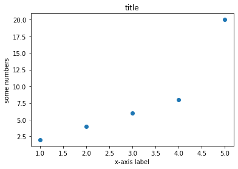

Visualization essentials¶
After importing data, you should examine it closely.
Look at the raw data to perform rough checks of your assumptions
Computer summary statistics
Produce visualizations to illustrate obvious - or not so obvious - trends in the data
Plotting with seaborn¶
First, a note about matplotlib¶
There are many different ways to visualize data in Python but they virtually all rely on matplotlib. You should spend some time reading through the tutorial:
https://matplotlib.org/stable/tutorials/introductory/pyplot.html.
Because many other libraries use matplotlib under the hood, you should familiarize yourself with the basics. For example:
import matplotlib.pyplot as plt
x = [1,2,3,4,5]
y = [2,4,6,8,20]
plt.scatter(x, y)
plt.title('title')
plt.ylabel('some numbers')
plt.xlabel('x-axis label')
plt.show()

Seaborn makes things easier¶
# import seaborn
import pandas as pd
import seaborn as sns
# import data
penguins = pd.read_csv("data/penguins.csv")
species = penguins['species']
# make a bar graph of bill_length_mm by bill_depth_mm
sns.scatterplot(data = penguins,
x = 'bill_length_mm',
y = 'bill_depth_mm',
hue = 'species')
<AxesSubplot:xlabel='bill_length_mm', ylabel='bill_depth_mm'>